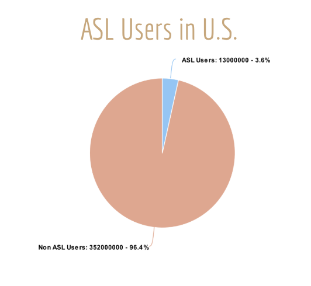
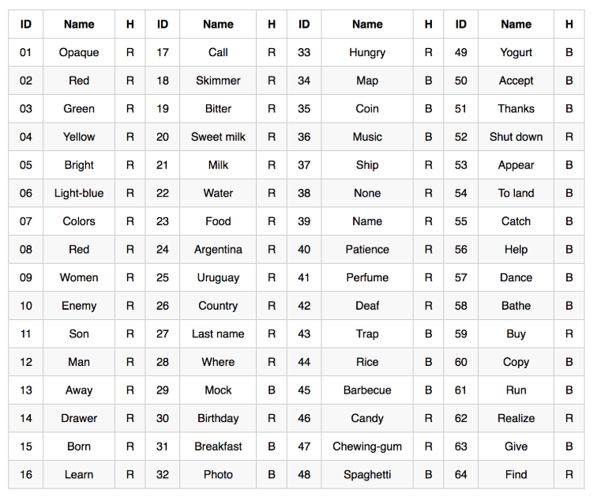
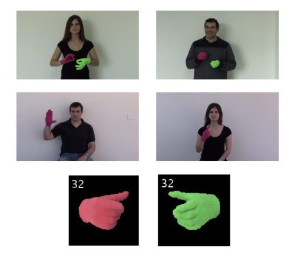
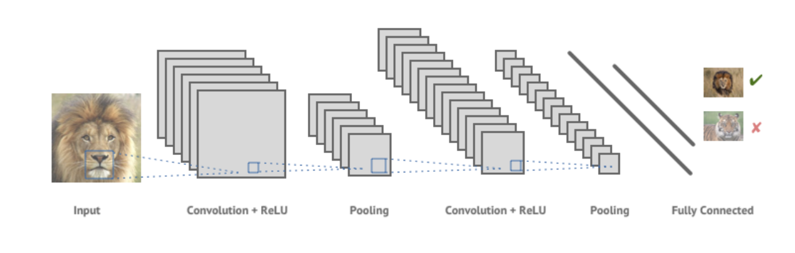
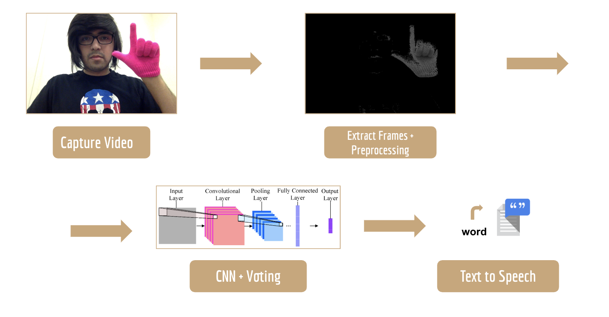
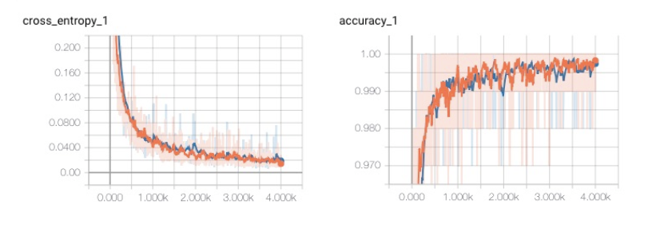
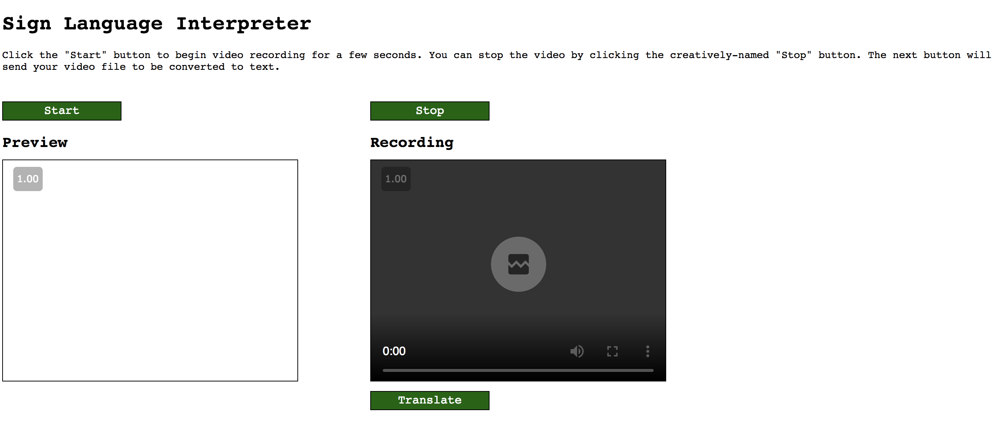

American Sign Language (ASL) is used by 500,000 to two million people in the U.S. Unfortunately, many resources that are taken for granted by users of spoken languages are not available to users of ASL, given its visual nature and its lack of a standard written form. One such resource is the ability to look up the meaning of an unknown sign. When we encounter an English word that we do not understand, we can look it up in a dictionary. Unfortunately, when an ASL user encounters an unknown sign, it is anything but straightforward to find the meaning of that sign. Using a typical printed ASL/English dictionary, one can easily find out what sign corresponds to an English word, but this does not work in the other direction.
A recent estimate claims that around 13 million people have some level of proficiency in American Sign Language, making it the third most commonly used language in the United States. But in the grand scheme of the entire US population, that makes up only 3% of the US population as shown below.
The goal of our project is to create a system that will convert video feed of a person signing in American Sign Language into English text. We hope to encourage communication between those who have no other way of expressing their ideas other than using Sign Language and those who do not know how to sign. We hope to cater to the 500,000 deaf people in the US and Canada who’s natural language is the American Sign Language (ASL), and work towards creating a more inclusive environment.

To bridge this gap, we have created a rudimentary Sign Language Interpreter Web App that can take in front-facing video of a person signing and give the user a live translation of up to 64 words of the Argentinian Sign Language.
This proof of concept takes in a video of a person signing, converts the video into frames, segments out the hands in the images and feeds the input into a CNN + LSTM hybrid model that yields the final output: the word corresponding to this sign.
Both Marwa & I were fortunate enough to have taken a few sign language classes in the past. We both understood just how complex ASL, and sign languages in general, could be, and it was with that in mind that we decided Deep Learning as it stands today has the potential to solve this problem. Or at the very least, make good progress on it.
Sign Language is a system of communication that uses visual gestures and signs. In other words, it’s a series of patterns. Recent advances in neural networks make them prime candidates for such a task, as they can be trained on large amounts of data to pick up subtleties in the data the oftentimes go unnoticed by most humans, and can therefore help up, in the case of images, classify them into categories as we see fit. For our purposes this meant that we can find or create data of people signing, and train a model to learn patterns in this data that help the model predict what word would be signed.
In order to accomplish this, however, we had to survey the models available that would best suit our goals. Since we ultimately want an application that takes in a video, we knew that we’d have to incorporate a Convolutional Neural Network somewhere in our pipeline, since they’re power comes in their ability to analyze patterns in images, which is exactly what videos are.
Finding patterns in images isn’t enough, unfortunately. Sign Language is a series of time based patterns. In other words, when it comes to interpreting a sign, the correlation between the time in which a pattern in the hands or face of a person is performed really matters. There’s another neural network architecture out there called a Recurrent Neural Network, which specializes on maintaining information from previous data in the analysis of new data. What this means for us is that we’d be able to use these networks to find correlations in the time sequences of images.
Putting these two components together should in theory allow us to establish a rudimentary processing pipeline for video data of an individual signing. In fact, in our research before starting the project, we found this combination of techniques used in a number of tools that were meant for classifying actions in video scenes. Scientists were able to use this, for example, to take a video of a dog at a beach, and have the networks recognize this fact and output what they see: i.e. “Dog running on a beach.”
In the area of sign language specifically, neural networks have been used to identify simple things like finger spelling. But we were unable to find any public project that went straight from someone signing, to a live translation. And that was our ultimate goal. Before we were able to make any progress on the matter, however, we had to either find or collect a lot of data.
One of the biggest difficulties of our project was obtaining a large enough video dataset of multiple individuals signing words in Sign Language. Since training deep learning models take a substantial amount of data to obtain high training accuracies, we were constrained on using the largest and most well structured open source dataset available to us, and that was LSA64 Argentinian Sign Language Dataset found here. Although there was no similar dataset available for the American Sign Language, the availability of this dataset allowed us to build a proof of concept; that we could train a model to recognize a specific word in Sign Language that could be multiple frames long.

The Argentinian Sign Language dataset consists of 64 different words in the Argentinean Sign Language, with videos of 10 different people signing each word up to 5 times, for a total of 3200 videos. For preprocessing, we broke up each video in 200 frames, each resulting in a large subset of images that we could train our model on. Additionally, since the hands in our dataset were conveniently colored (pink and green for the left and right hands respectively), it made it very easy for us to segment our the hands and color the image black and white, where the former represents the background and the latter represents the hands.

We decided to use a very powerful deep learning architecture known as Convolutional Neural Networks, which take in an image as input and run a sequence of filters on the image. What this ultimately does is find patterns in the image that can be used to potentially identify the image, and it reduces the image into a structure that we can then run through a series of functions, which ultimately culminate in a vector of probabilities for what the image might be.

With the constraint of a small dataset, we choose to employ the benefits of Transfer Learning. This design methodology takes advantage of a unique characteristic of CNNs to detect more generic features in earlier layers (lines, simple shapes) and more original-dataset-specific characteristics in later layers. We chose to experiment with two well-known models, one that is generally considered the most accurate and another that is the fastest: InceptionV3 & Mobilenet_1.0_224, respectively. They are both trained on the ImageNet dataset, which contains 1.2 million images with 1000 categories. The major difference between these models is that Mobilenet uses Depthwise separable convolution, while Inception V3 uses standard convolution. You can find more about the difference between these two methods here.
In order to utilize these complex architectures, transfer learning removes the old top or bottleneck layer, and trains a new one on the specific classes of images. The top layer receives as input a 2048-dimensional vector for each image. A softmax layer is then trained on top of this representation. Assuming the softmax layer contains N labels, this corresponds to learning N + 2048*N (or 1001*N) model parameters corresponding to the learned biases and weights.
We eventually decided to use Mobilenet_1.0_224 due to its easy deployability in the real world and quick training time. Since this model was developed for the purpose of being used in mobile applications, it was best architecture for our objectives.
The pipeline of our project is as follows:
1. Download the Raw Data of the LSA64: A Dataset for Argentinian Sign Language here. Place the unzipped file 'all' inside of a new directory 'preprocessing'.
2. Run python preprocessing.py. This will arrange all of the raw data into folders corresponding to each word category, split your dataset into a training and a test set (70:30 ratio), and capture 200 frames for each raw video in the training set as images and store them in the appropriate folder. Note that can you can specify how many words to include in your training set.
3. We will now apply Transfer Learning to add these new categories of Sign Language words to the pretrained Inception model. Download retrain.py here and store in the "code" directory. Note: This link may change in the future.
Run the following command:
nohup python cnn/retrain.py --bottleneck_dir=bottlenecks --summaries_dir=training_summaries/long --output_graph=retrained_graph.pb --output_labels=retrained_labels.txt --image_dir=preprocessing/image_data --tfhub_module https://tfhub.dev/google/imagenet/mobilenet_v1_100_224/feature_vector/1 &
4. In order to predict the word for any video that you specify, run: python demo/pipeline/mode_accuracy.py inside the main directory.
Make sure to specify the directory of your retrained graph. This script selects 20 equally spaced frames from the test images, segments out the hand from each one of the images, runs each image through the model, and takes the maximum predicted label out of the 64 words.

For the purposes of building a fully functioning pipeline, we first decided to build a model that can predict 10 words out of 64 words of the Argentinian Sign Language/
As described above, the model we used was a mobilenet architecture. And utilizing Transfer Learning, we were able to train our model to over 95% accuracies in less than a couple of hours on a CPU! As you can see on the graphs below, within the first few hundred epochs the model had reach over 90% accuracy. We trained for a total of 4000 epochs.

As mentioned previously, Sign Language is incredibly complex. The difference between any two signs could be a matter of facial expression, body posture, and/or hand movement. For this project alone, we focused on the hand positions alone, but for a complete and realistic application it’ll be necessary to take all these data into consideration. For that matter there are a number of possible extensions we could add to improve the quality and accuracy, as well as the range of signs, in our model.
For starters, there are existing networks that map the posture of the body, as well as the hands and landmarks on the face onto a series of two dimensional points. We can use these points in a similar and possibly simpler CNN+LSTM model. This will allow us to understand the temporal features of our input data as well as those specific to each image. Additionally, this allows us to abstract away unimportant information such as age, gender, ethnicity, or literally any part of the human point that isn’t related to posture so that the model doesn’t pick up on unimportant facets of the image.
Another feature we hope to incorporate is expanding our current preprocessing pipeline to segment hands from images without having to wear gloves of a specific color. There are multiples implementations online that use semantic segmentation to label the right & left hands respectively here that we hope to incorporate in the near future.
In order to run the demo and try out any of the 64 signs from the Argentinian dataset, clone the repository here and inside the demo folder, run the following:
FLASK_APP=run_demo.py flask run
You will be directed to the link http://127.0.0.1:5000/ where you can record a video from your webcam, and have translated output on the screen! You can also upload your own pre-recorded video to see the expected output.
